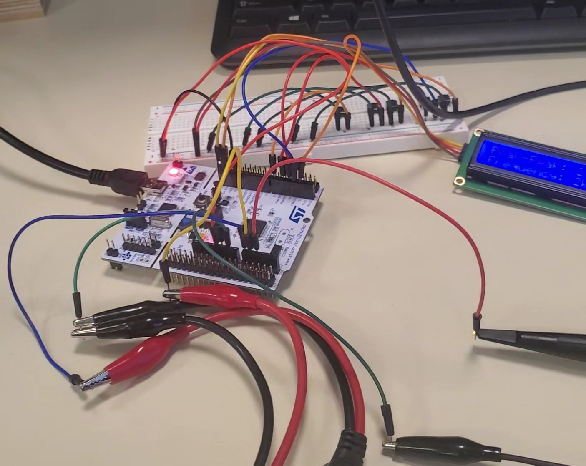
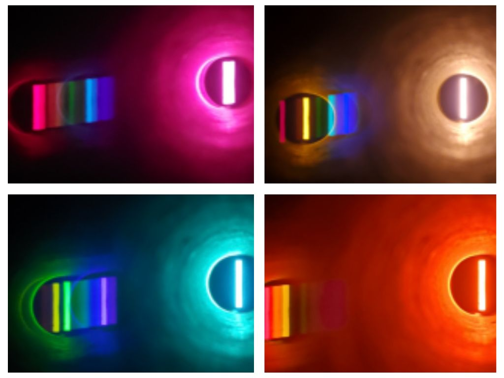
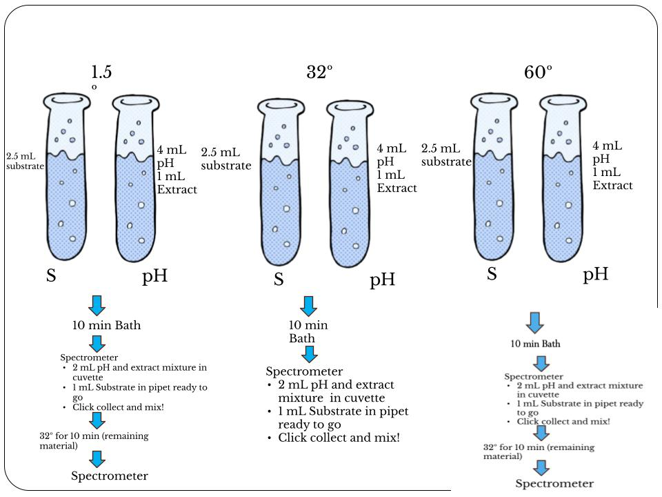
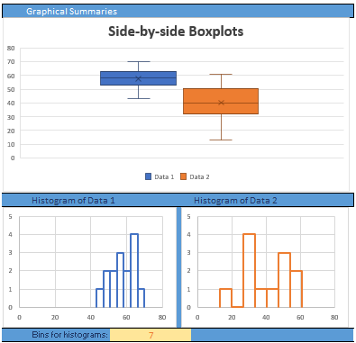

Embedded Systems
Hardware, microcontrollers and firmware, circuits, and digital systems projects


Software
Web apps and pure programming projects
Science and Statistics
Labs and data analysis projects


